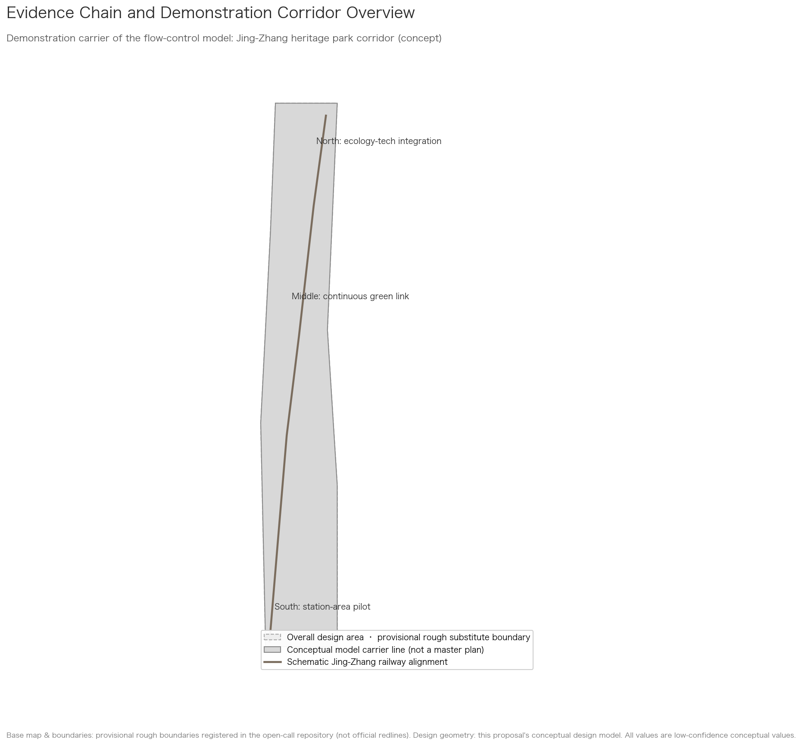
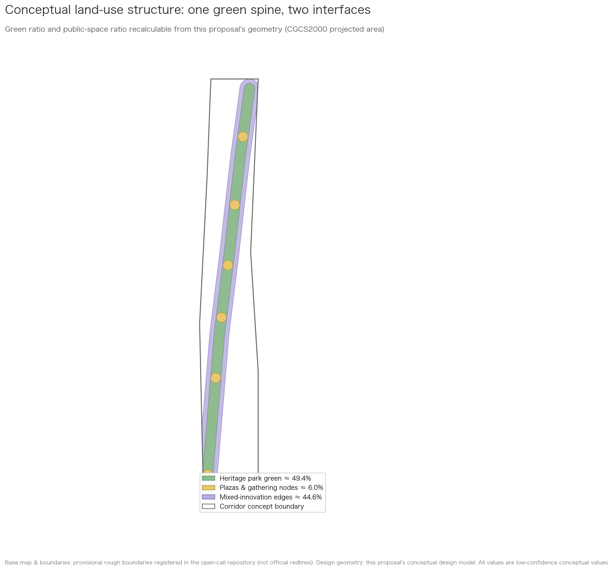
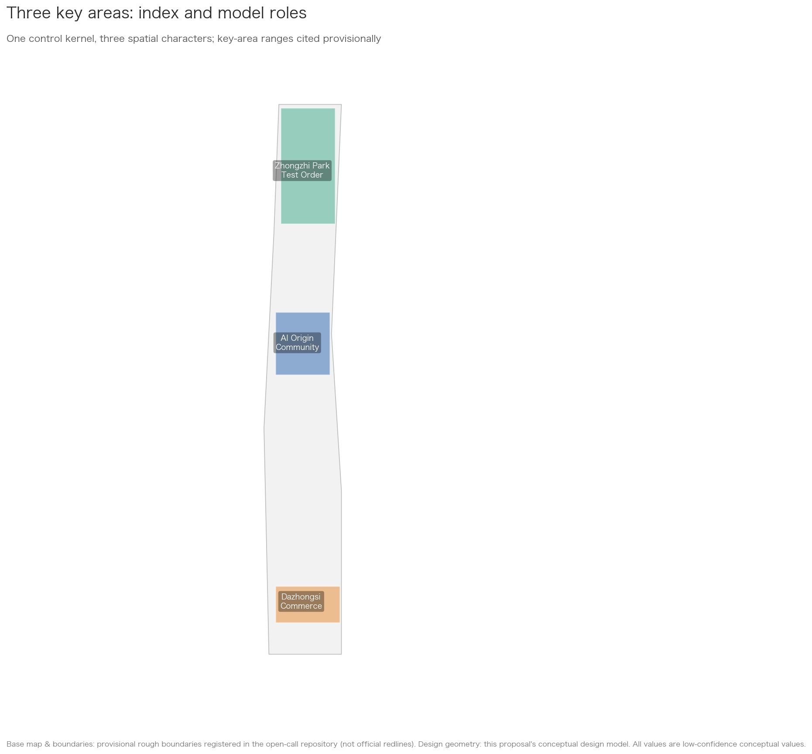
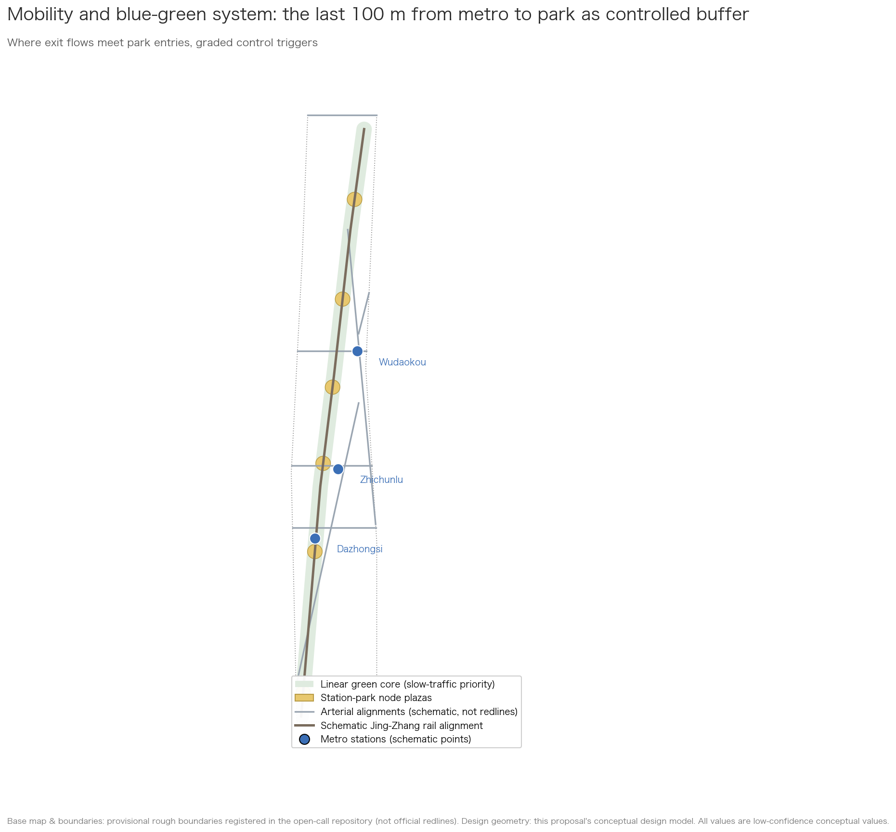
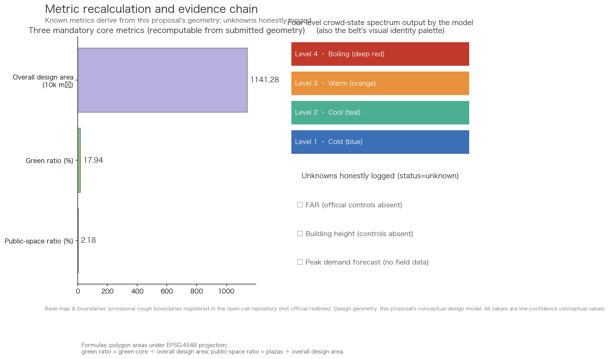

Passenger-Flow Thermometer: A Dynamic Crowd-Flow Control Model — Jing-Zhang Interface Demonstration
This submission presents a Passenger-Flow Thermometer for public spaces: anonymous aggregated flow states enter a computation layer that separates boarding and alighting pressure, and outputs are translated into public-space and operations actions. It demonstrates one station–park interface in the Jing-Zhang heritage-park context; it is not a master plan for the entire belt.
Passenger-Flow Thermometer: A Dynamic Crowd-Flow Control Model — Jing-Zhang Interface Demonstration
Design Basis and Source List
The first basis of this proposal is the Prequalification Announcement for the Centennial Jing-Zhang AI Innovation Belt Urban Design Open Call Source; the second is the Agent Open Call Taskbook Source. All spatial judgments derive from the repository's registered provisional rough boundaries Source Source. These boundaries are not official redlines; every area, ratio, and zoning derived from them is a low-confidence conceptual design value to be recalculated once official data is released.
The core contribution of this submission is a Passenger-Flow Thermometer for public spaces, demonstrated at one station–park interface in the Jing-Zhang railway heritage-park context. This is not a master plan for the Centennial Jing-Zhang AI Innovation Belt, and it does not claim to complete the belt's land-use, building, industry, or implementation planning; the wider area is used only as spatial context for showing how the model can enter a real public-space problem. The main contributor has methodological experience in urban public transport passenger-flow monitoring and has shared related methods publicly; this submission contains and requires no non-public operational data — all demonstration figures are clearly labeled simulated or conceptual values.
Source usage boundaries follow the repository registry Source: formal sources answer task requirements, background-only materials remain background, and provisional geometry yields only conceptual values. Gaps are logged in assumptions.json and the repository's missing_data_checklist.csv Source.

Three-Level Scope Framework
At the coordinated research area (~43.6 km²) and overall design area (~11.4 km²) levels, this submission provides context only; it does not present a complete plan for either scale Source Spatial data. The actual submission object is a conceptual demonstration of the Passenger-Flow Thermometer at one class of station–park interface: the last 100 m between the Dazhongsi station forecourt and a park entry. The continuous demonstration corridor shown in the drawings is only a conceptual carrier indicating that the model can move along public space; it does not replace a master plan Spatial data.
The working depth is therefore threefold: identify public-space questions at the open-call scale; show how one interface fits the Jing-Zhang heritage-park context; and specify the input, grading, action, and human-review loop at the selected interface. The three key areas and the two additional stations are comparison scenarios for model adaptation, not detailed urban designs for three districts Spatial data Spatial data Spatial data.
Once official redlines and key-area plans are released, everything listed in assumptions.json must be recomputed: all area-based indicators, node locations, and drawings Source.

Coordinated Research Area: Industry and Future City Research
Naming System and Logo Direction
Beyond the official name "Centennial Jing-Zhang AI Innovation Belt," this proposal suggests the brand name 「京张智脉」(Pulse of Jingzhang). "Pulse" ties together three threads: the Jing-Zhang railway as China's self-built steel artery a century ago; the innovation pulse of Zhongguancun; and — through this proposal's model — the city's flow states becoming visible for the first time.
The logo direction embeds a continuous crowd-flow waveform between two parallel rails. The color system reuses the model's four-level status spectrum (cold blue — teal — warm orange — deep red), so visual identity and model output are structurally the same thing. Fonts are limited to open-source licensed Chinese typefaces. Both naming and logo remain concept suggestions for professional refinement Source.
The Model's Position Among the Positionings, Functions, and Area-Wing Structure
Full responses live in compliance_matrix.json; here we state the model's position. Under the "intelligent, AI-vibrant city" positioning, the model is the safety operating system of public space. Under "AI+ scenario empowerment," it is among the most immediately deployable scenarios because it runs on anonymous aggregated data alone. Under "global voice in AI governance," a privacy-first, human-reviewable, fully switchable-off crowd management method is itself a governance narrative that can be shared internationally Source.
Across the three-areas-two-wings loop, the model supplies "one shared state language": campus flows at the AI Origin Community, test-range flows at Zhongzhiyuan, commercial flows at Dazhongsi, and event flows along both wings all read from the same rating levels and review procedures.
Coordination Mechanisms with Neighboring Innovation Nodes (Optional Interfaces)
Three optional interfaces — conceptual suggestions only, constituting no confirmed cooperation — are reserved for Beiwei Community, Future Science City, Huairou Science City, the Economic-Technological Development Area, and Beijing-Tianjin-Hebei collaboration: first, a scenario interface, where the thermometer grading protocol serves as an open specification any park can adopt to speak the same state language; second, a talent-and-events interface, opening annual co-creation camps and academic week slots to these nodes; third, a data-specification interface, publishing the minimal anonymous-aggregate field definitions for reuse in cross-region comparative studies. Activation requires a node's own initiative plus a signed data contract Source.
Global Case Studies
Six global cases from public publications inform this proposal through an "experience → transfer" reading:
| Case | Readable Experience | Transfer into This Proposal |
|---|---|---|
| Promenade plantée, Paris | Earliest complete conversion of abandoned rail viaduct into a linear park | Spatial prototype and phased logic for the heritage park corridor |
| High Line, New York | Operations mechanisms by which a rail-heritage park catalyzes surrounding renewal | Value-capture logic for mixed-innovation edges of the corridor |
| Rose Kennedy Greenway, Boston | Stitching back a city cut apart by sunken highways | East-west stitching: the corridor must not become a new barrier |
| King's Cross, London | Station-district renewal where public space carries daily programming | Event systems and time-shared management of node plazas |
| Shibuya station-city integration, Tokyo | Layered pedestrian networks relieving high-intensity interchange | Two-layer organization of metro flows and ground-park flows |
| URA pedestrian-friendly guidelines, Singapore | Institutionalizing pedestrian-flow assessment in design workflows | How the model enters building-design checks institutionally |
The conclusion is that upgrading crowd management from an operations tool to a pre-condition of design has clear international precedents. This proposal tries to organize those lessons into a public method that is decoupled across perceive–compute–apply, privacy-first, and human-switchable; whether it forms a transferable paradigm still requires real-world validation Standard.
Overall Design Area: Urban Renewal and Regulatory-Plan-Level Urban Design
This section only sets the spatial context for the model interface; it is not a master plan for the overall design area.
Spatial Interface: How the Model Enters Public Space
This submission does not provide an urban-renewal, land-use, building, or regulatory-plan proposal for the overall design area. It uses the Jing-Zhang railway heritage-park context to answer one focused question: when station exit flows and park-entry flows overlap in the last 100 m, how can the Passenger-Flow Thermometer turn an abstract number into a reviewable on-site action Spatial data?
The interface consists of four spatial relationships: station exit, station-forecourt buffer, park entry, and a convertible queuing/diversion edge. The model does not decide how buildings should be built. It gives professionals three reviewable outputs: current state, likely pressure direction, and suggested action. Suggested actions include expanding the queuing buffer, changing movement direction, pausing non-essential tests or events, and activating human guidance; the on-site operator retains command at all times Depth.
The provisional overall boundary, road alignments, and land-use layers only establish spatial context and a possible migration direction. They do not mean this submission completes the belt's master plan, and they produce no FAR, building-height, demolition-retention, or engineering conclusion Source.
Detailed Design of Key Areas
The three key areas are comparison settings for model adaptation, not detailed urban designs for three districts.
Comparison Scenarios: One Algorithm, Different Public Spaces
This submission selects one primary spatial interface: the last 100 m between the Dazhongsi station forecourt and a park entry. Zhichunlu and Wudaokou are no longer presented as three parallel detailed designs; they are comparison scenarios showing how the same algorithm changes its actions according to flow direction and operational goals. All three station points are schematic and all values are simulated Spatial data Source.
- Primary interface: Dazhongsi. Observe whether commercial activity, exit flow, and park-entry flow overlap enough to open the queuing buffer and activate human diversion procedures early.
- Comparison scenario: Zhichunlu. Observe routine inspection under commuting tides: stable states add no on-site intervention; rising states notify the duty operator.
- Comparison scenario: Wudaokou. Observe how station–park direction guidance responds when student and visitor flows overlap; this does not constitute detailed urban design for the Wudaokou district.
The three scenarios test the portability of “same input — same computation — different action”; they do not replace professional planning for the three key areas. Before deployment, section locations, device counts, threshold calibration, and field permissions must be confirmed by operators and professionals Depth.

AI Innovation Ecosystem, Personas, and AI+ Scenarios
Personas
Six personas: commuters (efficiency-first), residents including many seniors (safety and quiet first), university students (night-active), visitors (wayfinding-dependent), AI practitioners and developers (mechanism-sensitive, participation-minded), and space-operations managers (needing explainable bases rather than black-box alarms). Every scenario card names its persona mix Source.
AI Scenario Cards (12 cards, incl. 3 industrial test-validation scenarios)
| ID | Scenario | Personas | Data Input (all anonymous & aggregated) | Spatial Anchor | Privacy & Human Review |
|---|---|---|---|---|---|
| SC-01 | Station-park diversion guidance | Commuters, students | Simulated exit volumes, corridor density | Wudaokou, Zhichunlu forecourts | Point-level notices only; operator confirms before publishing |
| SC-02 | Slow-traffic gap diagnostics | Planners, cyclists | Observed delays, simulated heat traces | Corridor-wide network | Outputs are ranked suggestions subject to professional traffic review |
| SC-03 | Event-day flow rehearsal | Operations managers | Publicly reported historical ranges | Four node plazas | Results advisory; command stays human |
| SC-04 | Accessible journey companion | Seniors, wheelchair users | Manually surveyed facility ledger + slopes | Corridor-wide accessibility net | Route data never leaves device |
| SC-05 | Missing-person point assistance | Visiting families | Family-initiated report descriptions | Node plazas | Point-level only; facial recognition banned; police-led |
| SC-06 | Comfort forecast for public space | Residents, visitors | Public weather + simulated seat occupancy | Green core | No personal data |
| SC-07 | Night-companion lighting | Night walkers | Segment density | Night walking sections | Lights follow density; no surveillance function |
| SC-08 | Heritage digital guide | Visitors, students | User-initiated interaction | Memorial plaza, schematic rail line | Content passes history review |
| SC-09 | Industrial test: low-speed autonomous shuttle segment | Enterprises, commuters | Vehicle telemetry + exclusion-zone flow states | Zhongzhiyuan test lane | Requires legally mandated permits; auto-stop at threshold |
| SC-10 | Industrial test: delivery-robot corridor | Merchants, enterprises | Robot pose + segment flow | Dazhongsi to enterprise parcels | Auto-withdrawal during dense periods |
| SC-11 | Industrial test: open algorithm testbed | Enterprises, researchers | Anonymous aggregated simulation datasets | Model interface (online + nodes) | Data contract required; outputs reproducible |
| SC-12 | Developer anonymized data sandbox | Developers | Same as above | Online | Aggregate statistics only; 15-minute minimum granularity |
The full scenario-space-operation matrix lives in compliance_matrix.json. The three industrial test scenarios share one idea: the model itself is testing infrastructure — enterprises get a standardized safety foundation without building their own sensing systems, the most pragmatic public good within the "full-stack autonomous innovation system" Source.
Land Use, Building Scale, and Retain-Renovate-Demolish Strategy
Within the demonstration corridor, concept zoning derives from one geometry: heritage park green ≈ 49%, plazas ≈ 6%, mixed-innovation edges ≈ 45% Spatial data. The three mandatory metrics are registered at the submitted-scope level in metrics.json and recalculated in the metrics table below Metric Metric.
These numbers' nature must be stressed: they are low-confidence design-model values computed from our own conceptual geometry under a projected coordinate system, with formulas and sources logged in metrics.json, to be recalculated when official boundaries arrive. FAR, heights, totals, and demolition classes are recorded as unknown — without official controls, any concrete number would impersonate statutory planning Standard. Concept massing blocks indicate layout only Spatial data.
Transport, Rail, Municipal Infrastructure, and Public Services
This section only discusses how one station–park interface receives model output; it is not an overall transport, municipal, or public-service plan.
Focused Interface and Algorithm Demonstration
This submission does not propose the overall transport, municipal, or public-service infrastructure of the Jing-Zhang belt. The focused interface discusses how one public-space segment — station exit, forecourt buffer, and park entry — receives model output: identify the pressure direction, then let field staff decide whether to queue, divert, notify, or pause a related activity Spatial data. Road, rail, and node layers are schematic context, not engineering design conditions.
Station Comparison: One Primary Interface, Two Simulated Settings
The core grading method is the "Passenger-Flow Thermometer", a method that the main contributor continues to develop: anonymous aggregated sectional data enters the computation layer, which separates boarding pressure, alighting pressure, and sectional differences before handing a temperature state to an operator for review. "Matured" here means that the calculation logic has taken shape; it does not mean that real-world validation is complete. This submission does not treat simulated demonstrations as accuracy evidence Source.
The spatial demonstration selects one primary interface — the Dazhongsi station forecourt to park entry — while Zhichunlu and Wudaokou are comparison settings only. All inputs, temperature states, and actions are simulated: Dazhongsi observes overlapping commercial activity and exit flow; Zhichunlu observes stable inspection under commuting tides; Wudaokou observes direction guidance when student and visitor flows overlap. These scenarios show model adaptation, not station planning or approved deployment Spatial data Source.
The value of the three settings is to show a direction for portability, not to claim direct deployment. If an operator later supplies lawfully authorized anonymous aggregated data, the first step should be calibration, human review, and false-positive/false-negative evaluation at one interface before any extension to other public spaces. This submission contains no real-world accuracy, false-positive, false-negative, or operational-effectiveness conclusion.
Algorithm Disclosure
At the contributor's request, the core computation logic of the Passenger-Flow Thermometer is fully disclosed with this proposal, together with an interactive online demonstration driven by simulated data: https://jiumonanzhi.cn/temperature . The algorithm takes only anonymous, aggregated time-interval statistics as input: upstream/downstream sectional flows, station entry/exit counts, transfer volumes, the line's sectional capacity baseline, a time-of-day correction factor αt and a station-type correction factor αs, plus an evacuation capacity derived from escalator and stairway throughput. The computation has four steps Source:
1. Directional allocation: entry/exit volumes at terminal stations are assigned in full to their section direction; at intermediate stations they are split by directional allocation factors r_enter and r_exit; 2. Dual temperatures: boarding temperature Tu = (boarding demand ÷ remaining capacity) × 100; alighting temperature Td = (alighting demand ÷ sectional evacuation capacity) × 100; a simplified "pure-boarding temperature" using only boarding-side data is also provided for cases where alighting data is unavailable; 3. Sectional-difference combination: when alighting dominates (upstream > downstream), combined temperature = Td + max(Tu−10, 0)×0.3; symmetrically, boarding dominance yields Tu + max(Td−10, 0)×0.3; final temperature = combined temperature × αt × αs; 4. State grading: <40 normal, 40–60 watch, 60–75 Level-3 crowd, 75–90 Level-2 crowd, ≥90 Level-1 crowd; the demonstration renders five states in green–blue–yellow–orange–red, while the demonstration application's public interface consolidates them into the four-color language of cold blue — teal — warm orange — deep red.
All parameter values follow public industry standards and field-measurable attributes (equipment throughput, time-period and station-type factors), enabling full recalculation without any operator-internal data. The contributor retains authorship of the method and agrees to make it available for review, recalculation, and implementation within this project's open-source context.
Passenger-Flow Thermometer Model Card
State mapping: the computation layer outputs five states (<40 normal, 40–60 watch, 60–75 Level-3 crowd, 75–90 Level-2 crowd, ≥90 Level-1 crowd); the public interface consolidates them into a four-color language — normal & watch → cold blue, Level-3 → teal, Level-2 → warm orange, Level-1 → deep red — with shape symbols ●▲◆■ as non-color coding for color-vision-deficient users.
Parameter dictionary:
| Parameter | Meaning | Source |
|---|---|---|
| upstream / downstream | sectional flows by time interval | sectional counting devices (simulated demo values here) |
| enter / exit with r_enter / r_exit | station entry/exit volumes and directional allocation factors | terminals assigned in full; intermediate stations split by factors |
| transfer_in / transfer_out | transfer volumes | public rail-transit statistics conventions |
| C_line | line sectional capacity baseline | public rolling-stock capacity and headway data |
| P_evac | sectional evacuation capacity | escalator/stair unit throughput × count × damage factor |
| αt / αs | time-of-day / station-type correction | public standard clauses and field-measurable attributes |
Testing and operating boundaries: before deployment, false-positive/false-negative baselines are tested on simulated scenario sets and archived; when inputs are missing or below quality thresholds the system degrades to a "data insufficient" notice instead of guessing values; every public-facing state is confirmed by an operator; one switch-off reverts the space to ordinary static signage, and spatial function never depends on the system Source.
For municipal and new infrastructure, restraint is the principle: perception uses minimal sectional-counting devices only; no new data center; computing reuses existing government cloud; every fixture degrades into ordinary street furniture on power or network loss — space keeps functioning when the system switches off Depth.

Blue-Green Network, Public Space, and Urban Character
The blue-green structure is "one corridor, six nodes": a linear green core linking six node plazas (Xizhimen gateway, Dazhongsi station, Zhichunlu life, Wudaokou innovation exchange, Qinghua East Road technology, Qinghuayuan memorial) Spatial data Spatial data. The character baseline respects industrial-heritage qualities — sleepers, weathering steel, native planting — while AI appears as light and data visualization rather than sculptural clutter.
AI Pilgrimage Landmarks (three)
"Arc of Flows" (Xizhimen gateway): a light arc translating the corridor's live flow states into color and breathing rhythm — the model made physical, the first sight of "making safety visible" Spatial data.
"Sleepers of Time" (Qinghuayuan memorial plaza): a ground installation along 1909 (railway completion), 2009 (Zhongguancun independent-innovation zone), and 2026 (AI belt launch), with the herringbone-track motif honoring Zhan Tianyou's engineering wisdom Spatial data.
"Ring of Pulses" (Dazhongsi station plaza): a ring display presenting the open-source contributor roll and the iteration history of submissions — pilgrimage honors collective labor, not idols Spatial data.
The honor system and component library (lamp poles, signage, seats, counters) register in the visualization page; all components use clearable open-source designs Source.
Renewal Projects, Implementation Policy, and Phasing
“Phasing” here means algorithm validation stages, not construction phases for the belt Spatial data.
Model Validation Path and Minimal Demonstration Loop
These three stages are not construction phases for the belt; they are a validation path from “can calculate” to “deserves real-world testing” Spatial data:
1. Offline simulation and recalculation: use public parameters and manually constructed inputs to check directional allocation, Tu/Td calculation, sectional-difference weighting, five-level grading, and missing-data degradation. 2. Single station–park interface pilot: at one interface approved by the operator, collect anonymous aggregated sectional data, let field staff confirm the state, and compare suggested actions with actual handling. 3. Cross-context transfer evaluation: take the same parameter dictionary and test table to two different public-space types, observing where recalibration is needed instead of assuming direct portability.
This submission currently completes only the public demonstration of Stage 1 and the interface design for Stage 2. It has not completed real-world accuracy, false-positive, or false-negative validation. It is therefore an unfinished personal method prototype under continued development, not a ready-made safety product and not an operations decision conclusion.
Annual events and developer-community operations remain optional context inherited from the open-call taskbook, not deliverables of this focused submission. Any future event, testbed, or procurement arrangement requires separate operator approval and is not a government commitment Source.
Metrics, Area Recalculation, and Compliance Matrix
The three required core metrics recalculate as follows, each independently reproducible from the submitted geometry Metric:
| Metric | Value | Formula | Confidence |
|---|---|---|---|
| Overall design area | ≈ 11,412,825 m² | Polygon area under CGCS2000 projection (provisional boundary) | Medium (repository provisional boundary) |
| Green ratio | ≈ 17.94% | Green-core area ÷ overall design area | Low (conceptual) |
| Public-space ratio | ≈ 2.18% | Plaza area ÷ overall design area | Low (conceptual) |
Scope note: the green and public-space layers are conceptual spatial interfaces derived within the provisional overall design boundary. The 17.94% and 2.18% ratios use the overall design area as denominator; they are not ratios for the demonstration interface itself. All three values are independently reproducible from the submitted geometry Metric.
These are the taskbook's mandatory core visual metrics Source. Other indicators: FAR, height, and totals remain unknown pending official controls; per-capita space and demand forecasts need field data and are deliberately left unnumbered rather than fabricated Source. The visualization page's numeric declarations match metrics.json exactly Metric Metric.

Risk, Copyright, and Compliance
Data and privacy: the model handles only anonymous, aggregated, minimized movement states — no facial recognition, no individual trajectories, no retrievable location records; all demonstration figures are simulated.
Inclusion and accessibility: the four crowd states carry shape symbols (●▲◆■) as non-color coding; critical alerts always pair with on-site human guidance and non-digital fallbacks; accessible navigation and missing-person assistance keep purely human service channels, collecting only minimal necessary fields whose access, retention, and deletion rules are published with the operations plan; under weak networks or power loss everything degrades to static signage without harming spatial use. The contributor's practical background is stated only as methodological experience; no non-public operational data, internal reports, or uncleared material is included Spatial data.
Boundary precision: all spatial judgments rest on the repository's provisional rough boundaries, not official redlines; full recalculation follows official releases and may adjust the proposal Source.
AI-generated responsibility: this package was produced with an AI agent under final human authorship and responsibility. Global cases and standards citations rest on public materials; deviations will be corrected in continuous participation. Full statement in report/copyright_statement.md. Nothing herein constitutes statutory planning, approval basis, engineering conclusions, or any government commitment Standard.
Contact: human author Chen Xingyu (GitHub account 563323549-boop), email 563323549@qq.com — reviewers are welcome to reach out regarding model recalculation, demonstration deployment, and cooperation.
References
- Beijing Municipal Planning and Natural Resources Commission (Haidian Branch): Prequalification Announcement for the Centennial Jing-Zhang AI Innovation Belt Urban Design Open Call (May 2026).
- Agent Open Call Taskbook for the Centennial Jing-Zhang AI Innovation Belt (May 18, 2026 edition).
- Registered public sources, provisional-boundary derivation notes, and missing-data checklist of this open-call repository.
- Fruin, J., Pedestrian Planning and Design — classic level-of-service grading for pedestrians.
- GB 50157, Code for Design of Metro — published technical parameters for station density and evacuation.
- Ministry of Housing and Urban-Rural Development: Measures for Urban Design Management.
- Official project websites and published built-environment commentary for the six global cases (High Line; Promenade plantée; Rose Kennedy Greenway; King's Cross; Shibuya; URA pedestrian-friendly guidelines).
Registration status and usage boundaries of the above entries follow the repository source registry Source.